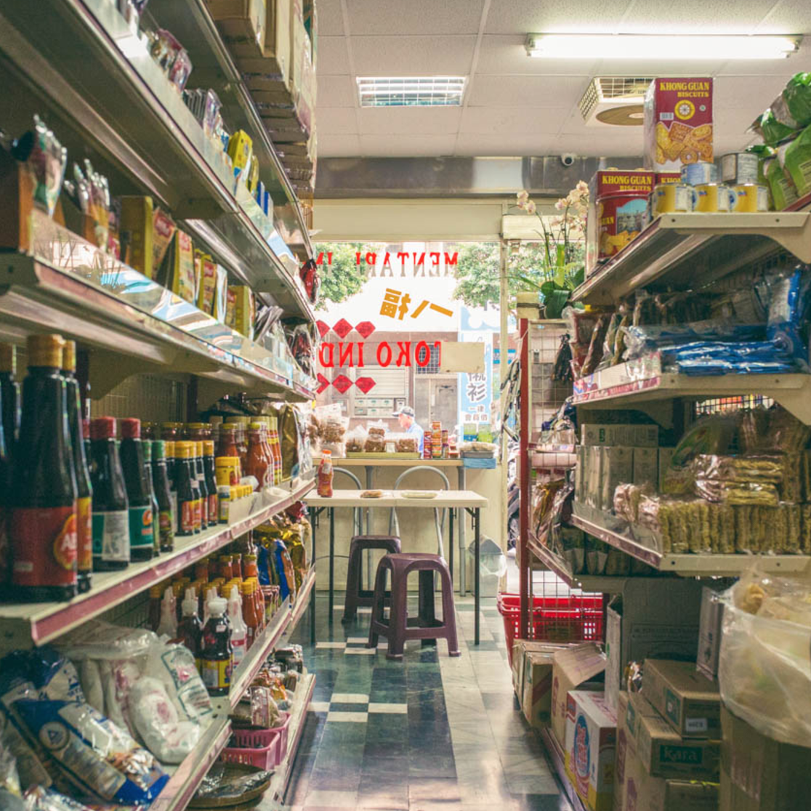

八福印尼便利商店
地址：新北市永和區得和路32號
電話：0987-523070
據點簡介：
這裡不只供應印尼菜和印尼商品，老闆還希望成為移工們的朋友，讓移工們在忙碌之中還有一點點時間可以紓解壓力。
八福商店如其他印尼商店一樣，也提供很多服務，客人可以在這裡買到電話卡、也提供貨運寄送的服務，
可以到移工的住處收件、更有台灣的旅遊雜誌和古蘭經可以選擇。特別的是，老闆在店家樓下還闢了個空間，
設置投幣式卡拉OK。如果你停下腳步、豎起耳朵仔細聽，可以聽到斷斷續續的印尼流行音樂從樓下竄出，
聲嘶力竭而充滿感情，宛如對家鄉藏不住的思念。